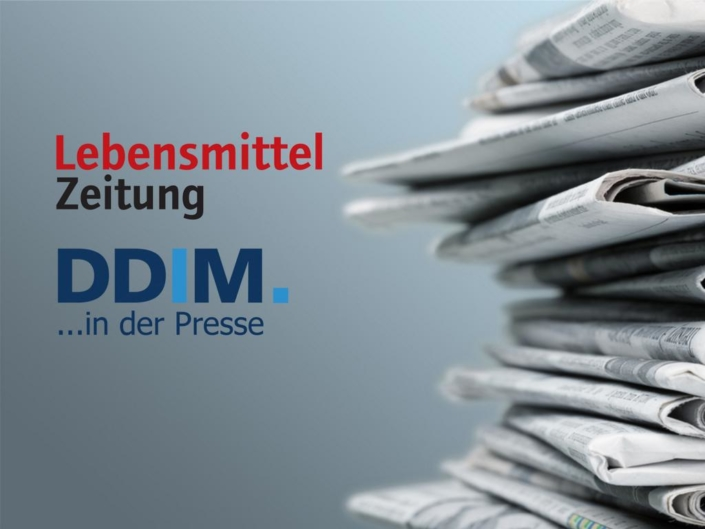
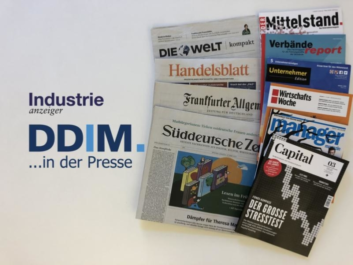
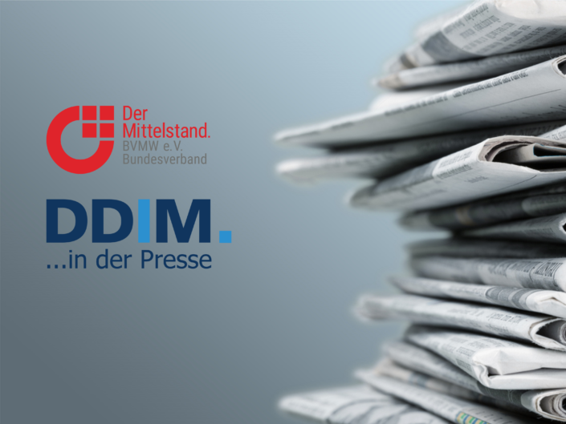

In der Presse
In diesem Bereich stellen wir Ihnen Berichte in zusammengefasster Form zur Verfügung. Soweit vorhanden, bekannt und genehmigt, finden Sie hier ebenfalls die entsprechenden Links zu den vollständigen Artikeln.
Interim Management als Sparringspartner in unsicheren Zeiten
Unternehmen greifen zunehmend auf Interim Management zurück, wenn Restrukturierung, Transformation oder harte HR-Entscheidungen anstehen. In seinem Artikel zeigt Winfried Gertz, warum externe Führungskräfte gerade jetzt gefragt sind, welche Branchen besonders profitieren – und wo der Mittelstand zögert. Auch die aktuellen Studienergebnisse der DDIM bestätigen den Trend: Restrukturierung ist auf dem Vormarsch. In einem Kurzinterview geht die Vorstandsvorsitzende der DDIM, Dr. Marei Strack, näher auf die Rolle von Restrukturierungsmandaten im Interim Management ein.
3. Juni 2025/von Priscilla LavodramaMarktausblick 2025: Führung auf Zeit – Gefragt wie nie!
Interim Management bleibt gefragt – auch wenn 2024 unter den Erwartungen lag. Im aktuellen Presseartikel im QUANTUM Magazin beleuchtet Dr. Marei Strack, Vorstandsvorsitzende der DDIM, die wichtigsten Ergebnisse der neuen Marktstudie: Ein leichter Aufschwung ist in Sicht, getragen von wachsendem Transformationsdruck, steigendem Fachkräftemangel und dem Wunsch nach Präsenz vor Ort. Für 2025 braucht es jedoch klare politische Impulse – und Interim Manager, die flexibel und sichtbar agieren.
27. Mai 2025/von Priscilla LavodramaDiese Chancen bietet der Jobmarkt aktuell erfahrenen Managern
Immer mehr erfahrene Führungskräfte nutzen Interim Management als Sprungbrett in die Unternehmensleitung. Ob als Restrukturierungsexperte, Geschäftsführer für Finanzinvestoren oder Nachfolger im Familienbetrieb – die Chancen sind vielfältig. Claudia Obmann beleuchtet im Handelsblatt, wie Manager erfolgreich Übergangsmandate nutzen und welche Herausforderungen sie dabei meistern müssen. Aktuelle Insights von der Vorstandsvorsitzenden der DDIM, Dr. Marei Strack, sowie spannende Praxisbeispiele, u. a. von DDIM Mitglied Michael Hengstmann, zeigen, worauf es ankommt, um langfristig erfolgreich zu sein.
4. Februar 2025/von Priscilla Lavodrama
Interim Manager – Problemlöser im Krisenfall
Interim Manager sind gefragt, doch die Zurückhaltung der Unternehmen ist spürbar. Während die Industrie Experten für Prozessoptimierung, Restrukturierung und neue Technologien benötigt, bremsen Kostenzurückhaltung und Unsicherheit viele Projekte aus. Brancheninsider, wie DDIM Vorstandsvorsitzende Dr. Marei Strack und DDIM Partner Thomas Schulz, beobachten dennoch einen wachsenden Bedarf – insbesondere in der Restrukturierung. Warum sich Investitionen in externe Führungskräfte dennoch lohnen und welche Branchen besonders betroffen sind, analysiert Julia Wittenhagen in der Lebensmittel Zeitung.
3. Februar 2025/von Priscilla LavodramaInterim Management – „Man hat ja nicht die berühmten 100 Tage Zeit“
Nicht Reden. Sondern Anpacken. Dieses Motto beschreibt die Arbeit eines erfahrenen Interim Managers, der seit über 13 Jahren weltweit im Einsatz ist. Seine Projekte führen ihn von Mexiko über Polen bis nach Usbekistan, wo er Produktionsstandorte aufbaut, Produktionsverlagerungen unterstützt und LEAN-Projekte umsetzt. Er übernimmt die Leitung von Produktionen und arbeitet als Geschäftsführer oder Werksleiter in verschiedenen Branchen. Diese Vielfalt ermöglicht es ihm, seine umfangreichen Erfahrungen ständig weiterzuentwickeln und zu erweitern. Im Gespräch mit AGRARTECHNIK betont er, dass dieser ständig wachsende Erfahrungsschatz nicht nur ihm, sondern vor allem seinen Kunden zugutekommt...
25. Juli 2024/von Priscilla LavodramaForbes – Interim Management In Europe: Making Great Progress
Der Artikel des Freelance-Experten Jon Younger hebt die transformative Rolle des Interim Managements in Europa hervor. Da die herkömmliche Vollzeitbeschäftigung für viele Unternehmen zunehmend unzureichend und zu kostspielig wird, hat der Einsatz von Interim- und Teilbeschäftigungsstrategien stark zugenommen. Laut der Umfrage 2024 von INIMA (International Network of Interim Manager Associations) halten mehr als 80% der Unternehmen unabhängige Fachkräfte für unerlässlich, um Zugang zu den qualifiziertesten Talenten zu erhalten und die komplexen und volatilen Marktanforderungen zu bewältigen. Mehr erfahren...
26. April 2024/von Priscilla Lavodrama
Interim Manager | Weitblickende Begleiter der Transformation in der Automobilindustrie
Der Artikel beschreibt die Rolle von Interim Managern bei der Bewältigung der tiefgreifenden Veränderungen in der Branche. Die Automobilindustrie steht vor enormen Herausforderungen, darunter Digitalisierung, Elektromobilität und neue Mobilitätskonzepte. Interim Manager werden oft in Krisensituationen eingesetzt, um schnelle, effektive Lösungen zu liefern und den Wandel voranzutreiben. Lesen Sie jetzt den vollständigen Artikel für weitere Details.
4. Februar 2024/von Priscilla LavodramaWeitblickende Begleiter der Transformation in der Automobilindustrie
Die Pandemie hat die Transformation in der Automobilindustrie enorm beschleunigt. Zur Zukunftssicherung braucht es neue Geschäftsmodelle. Erfahrene Interim Manager setzen notwendige Maßnahmen um und sorgen so für Handlungssicherheit.
4. Februar 2024/von Priscilla LavodramaInterim Manager treiben ESG-Ziele voran – Pragmatische Lösung für den Mittelstand
Mit der schrittweisen Einführung der 2022 in Kraft getretenen EU‑Richtlinie „Corporate Sustainability Reporting Directive" (CSRD) müssen zukünftig alle Unternehmen – unabhängig von ihrer Größe – ökologische und soziale Kennzahlen transparent machen. HR spielt in der Transformation zu mehr Nachhaltigkeit eine zentrale Rolle." Lesen Sie in diesem Fachbeitrag die Erfahrungsberichte und Stellungnahmen von Dr. Marei Strack, DDIM Vorstandsvorsitzende, Corinna Knott, Interim Managerin und DDIM Mitglied sowie DDIM Partner Tapani Hänninen, Partner der Boyden Interim Management GmbH.
31. Oktober 2023/von Priscilla LavodramaLücken schließen: Interim Management im sensiblen HR-Bereich
Im Bereich Human Resources ist Interim Management aktuell sehr gefragt. Hier können Interim Manager vor allem als Change Manager, Projektmanager und Prozessoptimierer mit ihrer Expertise glänzen. Allerdings nutzen derzeit zu wenige Unternehmen das innovative Erfolgsmodell "Interim Management". Welche stichhaltigen Vorteile Interim HR Manager mit in jedes Unternehmen bringen u.v.m., erläutern die DDIM Vorstandsvorsitzende Dr. Marei Strack, DDIM Interim Managerin Katrin Schauffele, DÖIM Interim Manager Bodo Antonic, Interim Manager Matthias Mono sowie Heike Gorges von der Personalberatung HRblue anhand von praxisnahen Fallbeispielen und persönlichen Erfahrungswerten.
2. August 2023/von Priscilla Lavodrama
Mit Interim Management die Energiewende meistern
Die Energiewende, die Digitalisierung und der steigende Wettbewerbsdruck erfordern von Unternehmen ein hohes Maß an Flexibilität und Innovationskraft. Besonders für KMU kann es schwierig sein, immer auf dem neuesten Stand zu bleiben. Hier können Interim Manager eine wichtige Rolle spielen. Die DDIM Interim Manager Dr. Horst Neyer und Wolfgang Schmid verrieten in einem Interview, wie das Erfolgsmodell "Interim Management" Unternehmen dabei helfen kann, die Energiewende nachhaltig zu meistern.
7. Juni 2023/von Priscilla LavodramaChef auf Zeit – das sind die Aufgaben eines Interim Managers
Auf den Führungsebenen deutscher Unternehmen haben immer häufiger Interim Manager das Sagen. "Sie helfen beispielsweise bei einer Insolvenz, begleiten ein anspruchsvolles Projekt oder vertreten den Geschäftsführer im Sabbatical." In diesem Presseartikel von Nina Jerzy, Redakeurin der WirtschaftsWoche, geht es um das Berufsbild des Interim Managers. DDIM Vorstandsvorsitzende Dr. Marei Strack und DDIM Partnerin Annette Elias von den Interim Profis stehen Rede und Antwort.
8. Mai 2023/von Priscilla LavodramaHeidrick & Struggles nach Übernahme Nummer zwei in Deutschland
"Düsseldorf Anfang Februar hat die weltweit zweitgrößte Personalberatung Heidrick & Struggles strategisch in Deutschland investiert. Die Übernahme von Atreus, dem deutschen Marktführer für sogenanntes Interim-Management, ist nicht nur die bisher größte Akquisition für den börsennotierten US-Konzern außerhalb des Heimatmarkts. Heidrick & Struggles sortiert damit auch die Reihenfolge der größten Headhunter im deutschen Markt neu. Durch die Übernahme rückt das US-Unternehmen mit Blick auf die Bilanz im laufenden Jahr auf den zweiten Platz hinter Marktführer Egon Zehnder vor."
21. Februar 2023/von Priscilla LavodramaDen Change voranbringen: Wie HR-Interim-Manager Personalabteilungen entlasten
Komplexe Change-Projekte, Recruiting oder Spezialaufgaben: Die Bandbreite der Themen im HR Interim Management ist gewachsen. Am stärksten werden die flexiblen Problemlöser im Mittelstand nachgefragt. Die Interim Manager und DDIM Mitglieder Dr. Frank Edelkraut, Martina Tücking und Stefanie Heckmann geben u. a. Einblicke in ihre jüngsten HR Mandate. Bei dem einen Auftraggeber wird ein neuer Recruiting-Prozess aufgesetzt, bei dem anderen die Gehaltsabrechnung optimiert oder eine Betriebsvereinbarung verhandelt...
6. Dezember 2022/von Priscilla LavodramaAktiv statt reaktiv – Was macht Unternehmen zukunftsfähig?
Auf die Frage, was Unternehmen zukunftsfähig mache, hat die Vorstandsvorsitzende der DDIM, Dr. Marei Strack, eine klare Antwort: In Zeiten von großen Krisen seien die Resilienz und die Veränderungsfähigkeit die entscheidenden Erfolgsfaktoren, um im Wettbewerb bestehen zu können. Das bedeute, dass Unternehmen Veränderungen erkennen und äußerst schnell darauf reagieren müssten...
24. November 2022/von Priscilla Lavodrama